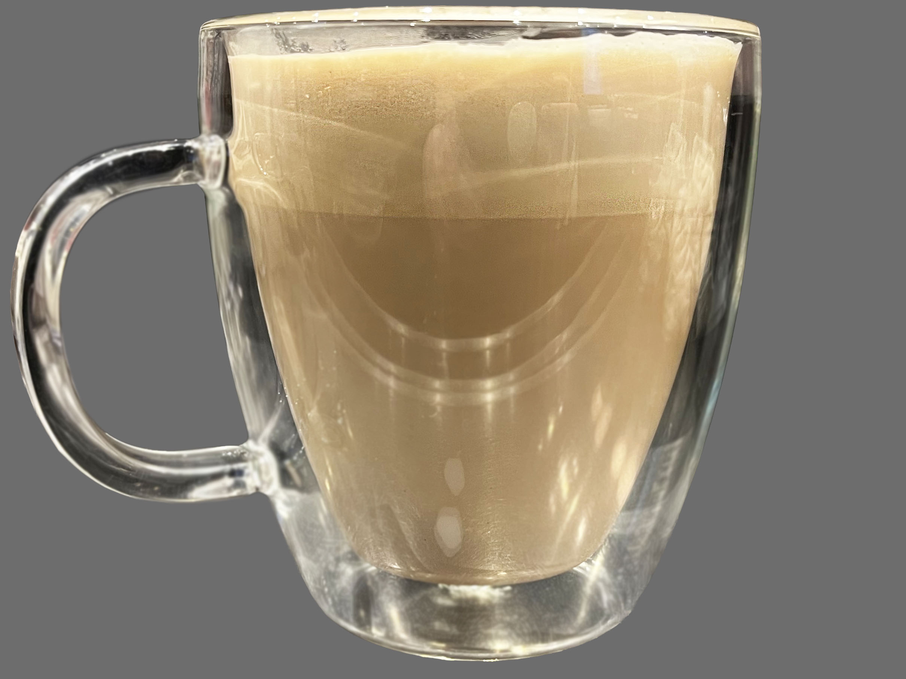
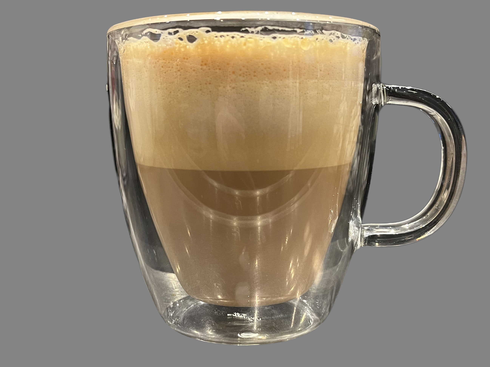
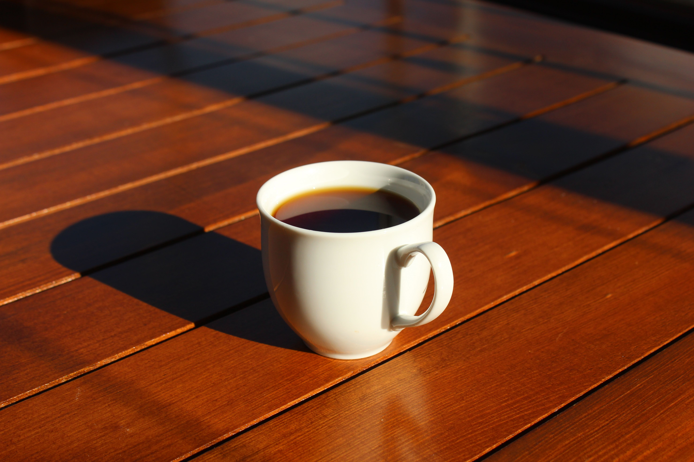
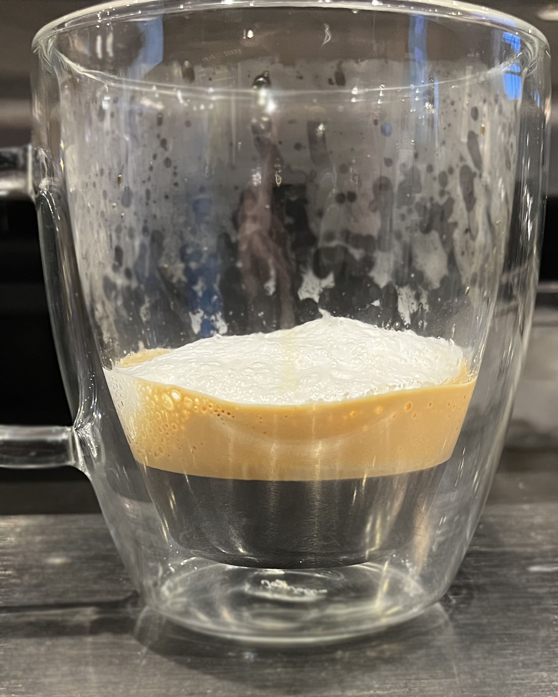
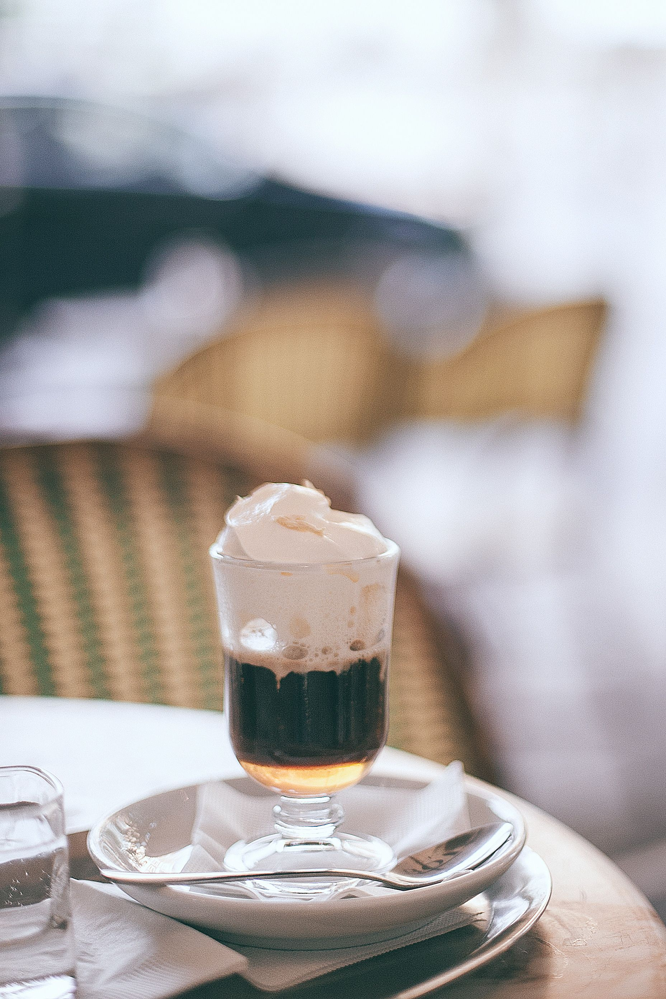
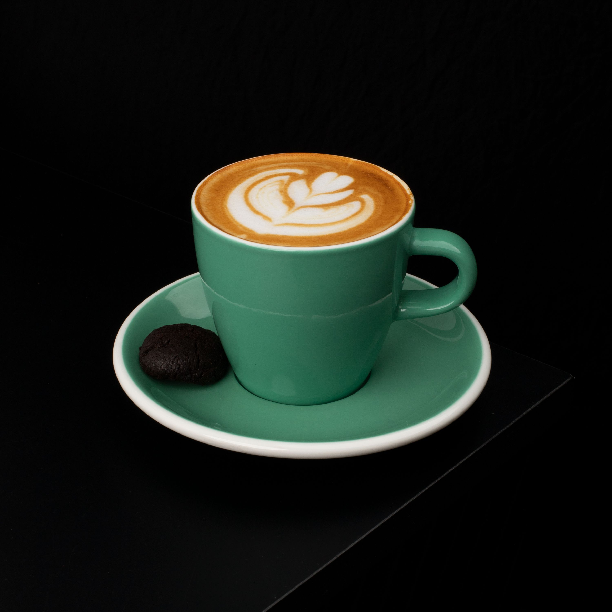

Classic Espresso Drinks
The beverages listed below are only some of the most commonly found espresso beverages found on coffee house menus. There are many more beverages that can be made, but these are the most commonly found and are the ones people are wondering what they are.
| Drink Name | Description | Image |
|---|---|---|
| Cafe Latte | A cafe latte is a popular beverage made with espresso, steamed milk, and a small amount of milk foam. The ratio of espresso to milk varies depending on personal preference, and size. |  |
| Cappuccino | A cappuccino is a coffee drink made with espresso, steamed milk, and milk foam. This beverage is very similar to a cafe latte but it has a thicker layer of milk foam. |  |
| Americano | An americano is a coffee drink made with espresso and hot water. This is typically served and asked for because of its stronger flavor than a cafe latte. |  |
| Espresso Macchiato | An espresso macchiato is a coffee drink made with a shot of espresso and a small amount of milk foam. The number of shots can vary depending on personal preference. |  |
| Espresso Con Panna | An espresso con panna is a coffee drink made with a shot of espresso and a small amount of whipped cream. The number of shots can vary depending on personal preference. |  |
| Cortado | A cortado is an espresso drink typically made with three shots of espresso and a small amount of steamed whole milk. Traditionally, it is made as a 4 to 5 ounce beverage. |  |